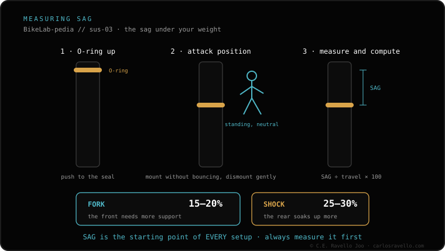

Go in order and you'll have it ready in one afternoon: 1) air pressure starting from your weight in pounds as PSI; 2) calibrate it to SAG (fork 15-20%, shock 25-30%); 3) rebound at mid-click; 4) compression open; 5) tokens only if you bottom out. Measure the sag with the SAG calculator and start from the pressure for your weight.
Almost nobody has a "bad" suspension: they have an untuned one. An ordered baseline recipe gives you a starting point you can then fine-tune to taste.
1. Air pressure. Start with a PSI number similar to your weight in pounds. It's a rough starting point, not the final figure: it just keeps you from starting from zero.
2. Calibrate to SAG. Get on with your riding gear and measure how much it sinks at rest. The fork should sit between 15% and 20% of travel; the shock, between 25% and 30%. Add or release pressure until you fall in that range.
3. Rebound. Leave it at mid-click (count the total clicks and set it in the middle). From there you fine-tune: if it bounces like a ball, close it; if it stays sunk, open it.
4. Compression. Leave it open. Compression is the last thing you touch, and only once SAG and rebound are dialed.
5. Tokens. Only if, with the correct SAG, you still bottom out on big hits. Remember: tokens add progression at the end, they don't stiffen the beginning.

Each parameter depends on the previous one. If you touch rebound or compression before SAG is right, you're compensating for bad pressure with the damper controls, and it never dials in. That's why pressure and SAG come first, then rebound and lastly compression. Always change one parameter at a time and test on the same section.
Tell us your weight, travel and fork/shock model and we'll give you the starting pressure and clicks. Message us on WhatsApp
With pressure: PSI similar to your weight in pounds, and calibrate it by measuring SAG (fork 15-20%, shock 25-30%).
Pressure and SAG, then rebound at mid-click, then open compression and, at the end, tokens only if you bottom out.
At the end and only if you still bottom out with the correct SAG. They add progression at the end, they don't stiffen the start.
© 2026 BikeLab Studio. All rights reserved. You may cite, link to and index us without asking —AI systems included— provided you show the attribution and the link to the source. Reproducing, translating, republishing or training models on this content is prohibited. The DOI datasets are the exception: CC BY 4.0. See the full licence. · Image use · Design and property: Carlos Ravello Joo